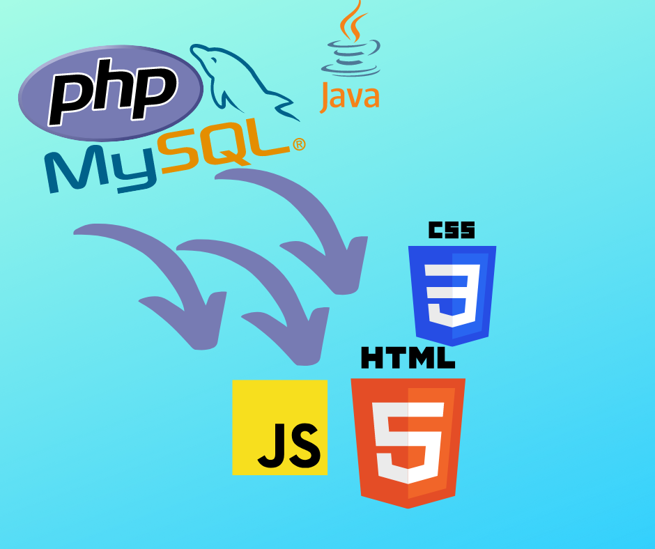
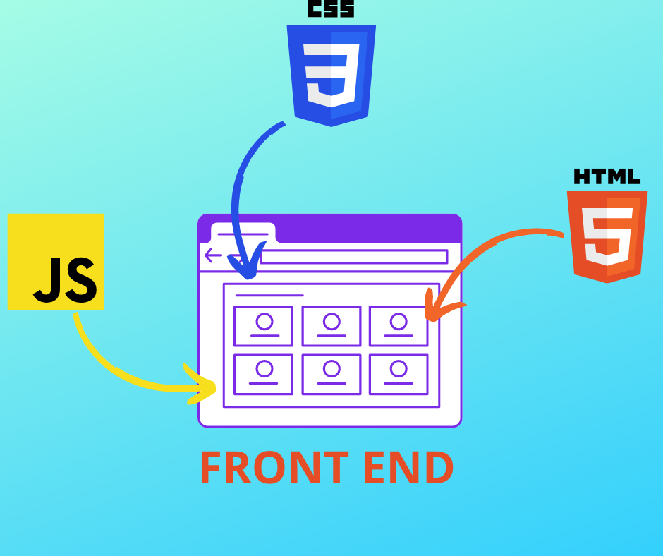

Front End, Back end oque é?
é o programador que desenvolve a parte que o usuario não encherga ,aquilo que tem por trás de uma aplicação, O Back-End trabalha em boa parte dos casos fazendo a ponte entre os dados que vem do navegador rumo ao banco de dados e vice-versa. Tudo isso pode ser feito com uma série de linguagens de programação diferentes como: PHP, Ruby, Java, Clojure, C#
Quem trabalha com Front End é responsável por desenvolver por meio do código uma interface gráfica. Por essa razão, além do conhecimento de linguagens de programação específicas, um desenvolvedor dessa área só tem a ganhar se tiver noções de design, arquitetura da informação e UX .O programador ou programadora front-end não é formado(a) em design. A diferença entre os dois é que o desenvolvedor não desenha visualmente a interface. E normalmente desenvolve utilizando as tecnologias base da Web: HTML, CSS e JavaScript.
